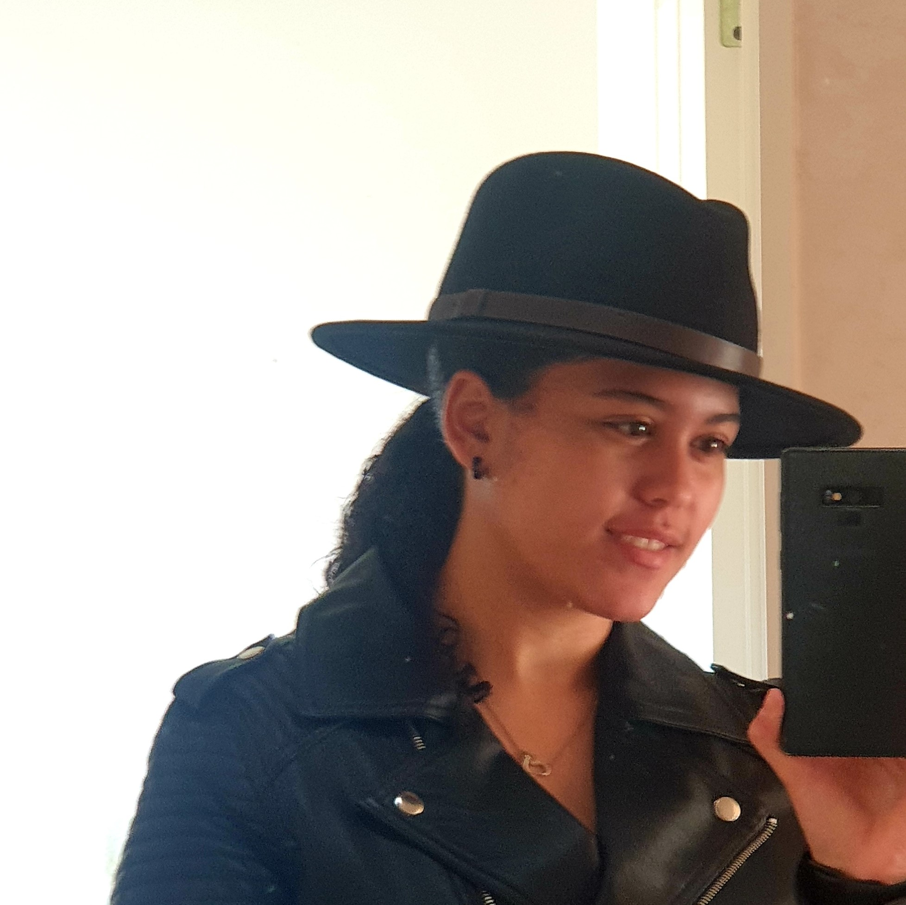

Lissa Yon.
Pepeha
Ko Table Mountain Te maunga
ko Orange river Te awa iti
ko Mama, Papa, 4 teina Te hapu
ko Johannesburg Te pa taw hito
ko Botany Downs Secondary School Te Kara
ko Yon tokou whanau
ko Bradley toku papa
ko Melanie toku mama
ko Lissa toku ingoa
culture
i was born in south africa in 2007. South Africa is known at the rainbow nation culture becasue it has a verious amount of different nationalities, sexualits, and culture all being surported
skills
I enjoy baking and cooking
i enjoy making and listening to music/p>
i enjoy doing photography and videography
i am a critical thinker
Empathy
Work ethic
self-awareness
Contact Me
Auckland, NZ
Phone: 1800
Email: lissayon744@gmail.com
instagram: @lissa_yon17/
facebook: @lissa yon
linkedin: @lissa yon